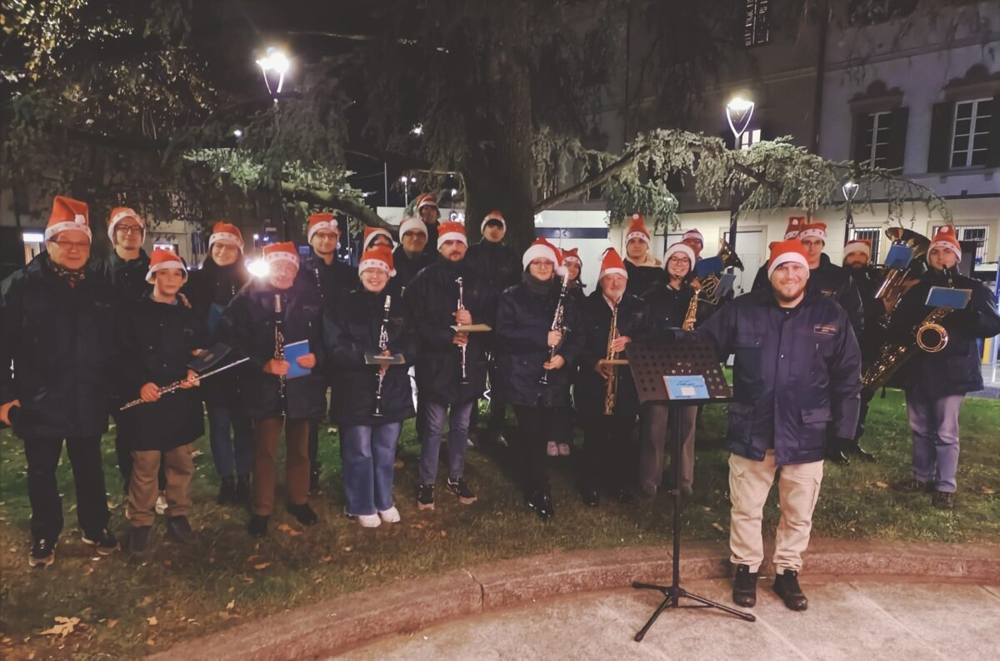
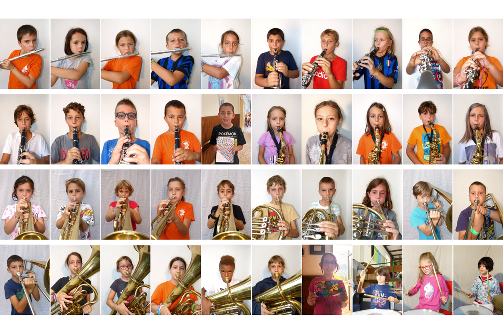
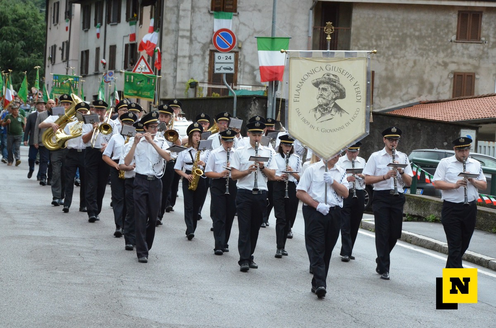
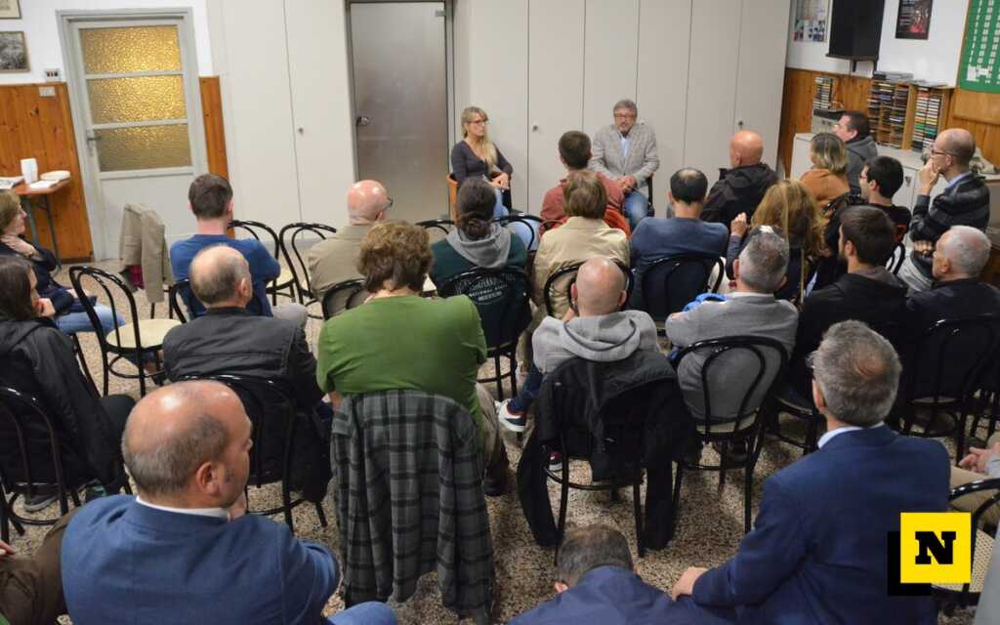
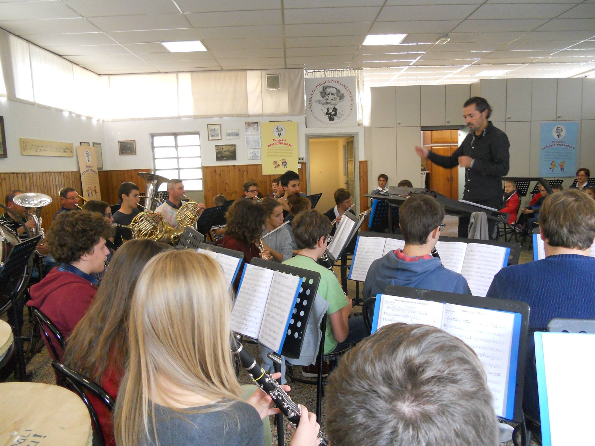
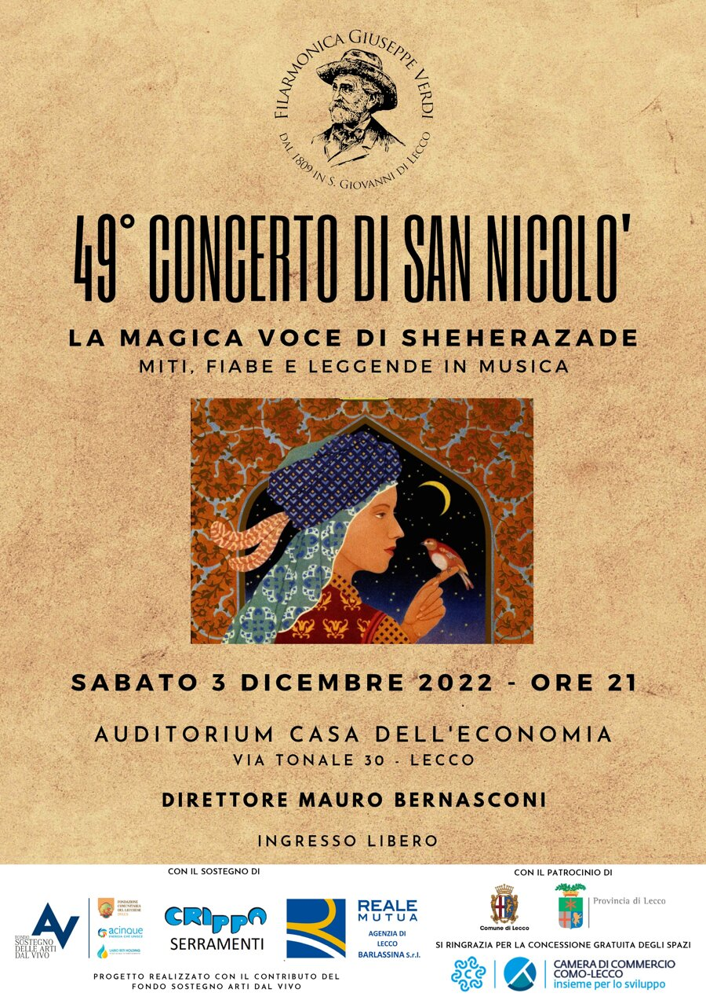
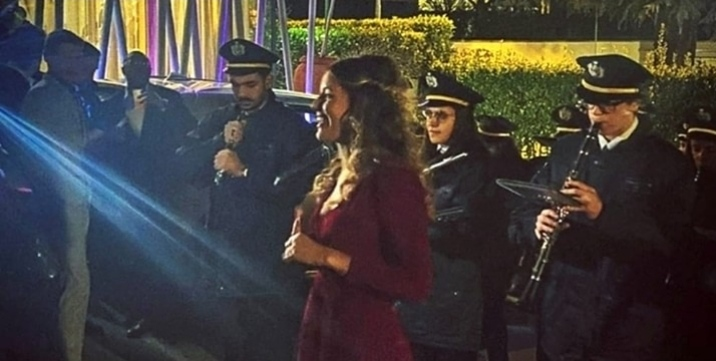
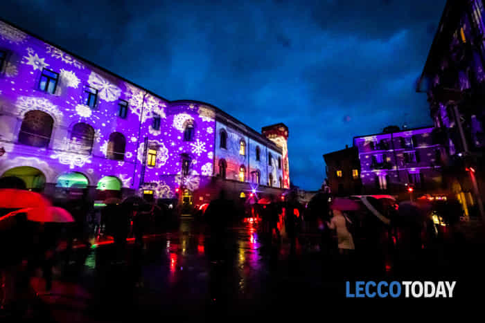
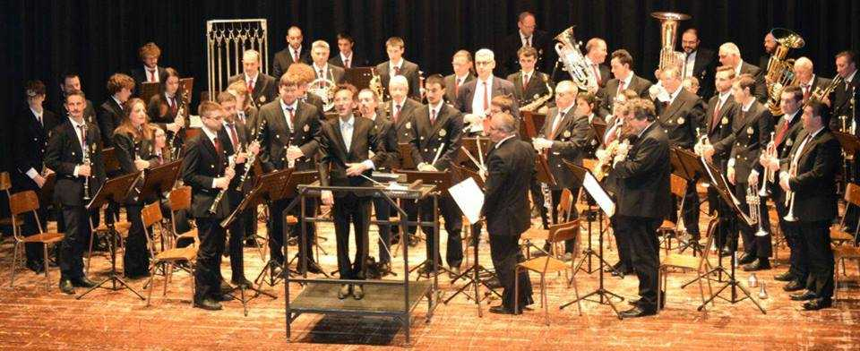

Maggio 2026
Torna «Pronti, settembre, via!»
Il progetto della Filarmonica dedicato ai bambini delle scuole elementari torna con musica, gioco e divertimento.
Leggi la notiziaProgetti, concerti e racconti dalla Filarmonica.
Il progetto della Filarmonica dedicato ai bambini delle scuole elementari torna con musica, gioco e divertimento.
Leggi la notizia
Il concerto diretto da Mauro Bernasconi conquista il pubblico della Casa dell’Economia.
Leggi la notizia
La Filarmonica partecipa alla cerimonia di accensione dell’albero di Natale a Lecco.
Leggi la notizia
Un pomeriggio per conoscere la Scuola Allievi e le nuove opportunità di studio.
Leggi la notizia
Grande partecipazione al progetto per i bambini prima della ripresa delle lezioni.
Leggi la notizia
La Filarmonica presenta due settimane di laboratori prima dell’inizio della scuola.
Leggi la notizia
La Scuola Allievi accoglie giovani e adulti interessati alla musica nella sede di San Giovanni.
Leggi la notizia
La banda ha accompagnato la sfilata per il 70° anniversario del gruppo Alpini di Bonacina.
Leggi la notizia
Il tradizionale concerto ha riempito l’auditorium della Casa dell’Economia.
Leggi la notizia
Un incontro sul ruolo culturale e sociale della Filarmonica e sulla collaborazione con il territorio.
Leggi l’articolo originale
La scuola presenta lezioni individuali, propedeutica e musica d’insieme per i nuovi allievi.
Leggi l’articolo originale
La Filarmonica suona a Varenna per Ville aperte in Brianza, tra celebri pagine operistiche.
Leggi l’articolo originale
Una rassegna tra Lecco, Barzio, Abbadia, Olginate e Varenna, sostenuta dal Fondo Arti dal Vivo.
Leggi l’articolo originale
Il 49° concerto, diretto da Mauro Bernasconi, inaugura il progetto Suoni di Banda.
Leggi l’articolo originale
La banda accompagna una festa al ristorante Nicolin, coinvolgendo anche il quartiere.
Leggi l’articolo originale
La banda partecipa all’accensione delle luminarie natalizie in città.
Leggi l’articolo originale
Il 47° concerto chiude le celebrazioni dei 210 anni della Filarmonica al Cenacolo Francescano.
Leggi l’articolo originale